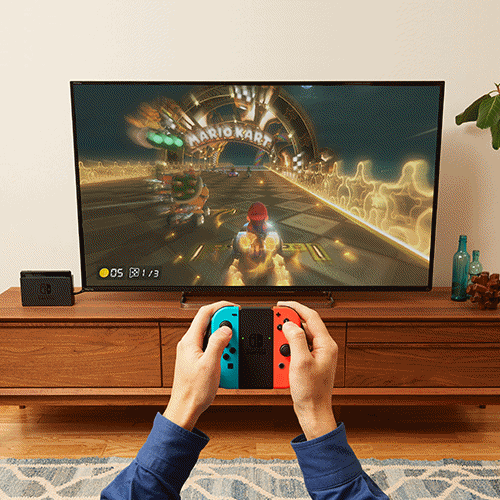

A evolução do console da nintendo
Relembre o primeiro video game da desenvolvedora e compare com o mais recente.

Relembre o primeiro video game da desenvolvedora e compare com o mais recente.
Também conhecido como "fita", o cartucho era a mídia física que os consoles utilizavam na época, apesar do tamanho, ao contrário dos CDs, os cartuchos tinham uma ótima resistência e é um objeto duradouro até hoje para aqueles que ainda o possuem.
Alguns jogos de sucesso do NES:
Os controles eram mais simples do que qualquer coisa, mas não dava pra você desligar o vídeo game por ele.
Você também não precisava se preocupar com baterias (até porque não existia), ele tinha um cabo fixo conectado, o que por outro lado te limitava a ficar em um espaço pequeno para jogar.
O NES possuía uma porta protetora onde eram inseridos os cartuchos.

Muito diferente do cabo HDMI de hoje, os cabos do NES eram do tipo AV, que possuíam a entrada de áudio e vídeo. A resolução original do console era de 256×240 pixels.
Nintendo Entertainment System (NES) é um console lançado pela Nintendo na América do Norte, Europa, Ásia, Austrália e Brasil. Originalmente lançado no Japão em 1983 com o nome de Nintendo Family Computer, ou apenas Famicom, o sistema foi redesenhado e recebeu o novo nome para ser lançado no mercado americano em 1985.
Lançado em março de 2017, o Nintendo Switch foi projetado para se adequar à sua vida, transformando o console doméstico em um sistema portátil em um piscar de olhos.

O Switch possui 3 modos diferentes para jogar, o modo TV, superfície estável e o modo portátil.
Indo na contra mão de seus concorrentes, a Nintendo aplicou o “cartão de jogo” para a mídia física do Switch que segue a mesma lógica do cartucho, só que em um tamanho bem menor com certeza.
Alguns jogos de sucesso do Switch:
A parte principal do console fica no “tablet”, que possui uma tela de 6,2 polegadas com touchscreen. A base que vem junto é necessária para se conectar com a TV e serve como um “upgrade” para ter uma melhor qualidade de imagem que pode chegar a 1080p e 60FPS.

O controle sem fio Joy-Con oferece novas formas de jogabilidade ao Nintendo Switch, ele pode até se tornar 2 controles pra você se divertir com alguém dependendo do jogo e existem vários acessórios que deixam a experiencia deles ainda melhores.